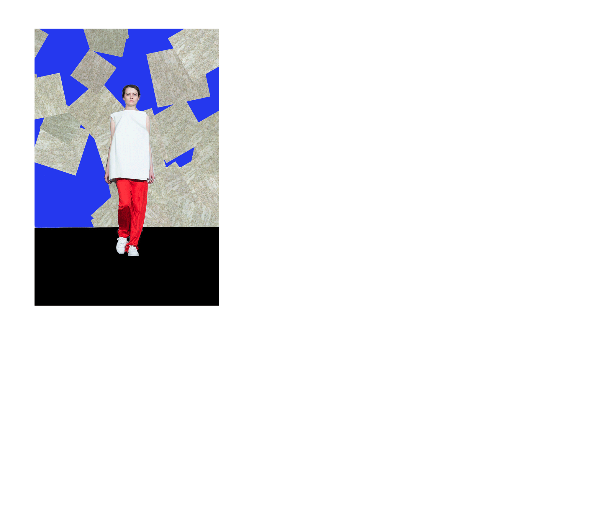

Valerie Nelson grew up in West Palm Beach, Florida, where she grew quite fond of the colorful architecture and tropical plants that are often seen as cliche and tacky.
As a child she would hide in corners and formulate stories and ideas on paper that she had been unable to verbally express. She would attend small drawing classes and pottery classes at a nearby art center, still seldom speaking out loud.
Her favorite activities as a child were drawing, intently watching nickelodeon, and swinging on palm fronds.
Valerie had lived her childhood in a sort of daze, primarily day dreaming, and not being entirely self-aware.
She had viewed “real life” in a way one views a television show, watching very closely, empathizing with others, yet feeling personally disconnected and prohibited from any ability to interact.
Then one day, Valerie suddenly realized she was a physical and intellectual human living within society, someone who could actually trigger responses from others and be able to express individual opinions.
This revelation both terrified her and fascinated her, and she would try as hard as she could to make her own decisions and speak her mind.
In 2008, Valerie was accepted into A.W. Dreyfoos School of the Arts.
After a few months, she became comfortable there, and had realized many other students had felt similarly to her.
There, she was able to paint and animate the ideas and stories she wanted to tell, this time in a more refined and detailed manner than before.
She also grew a large interest in science fiction at that time, both philosophically and aesthetically.
After many hours of thinking and weighing certain pros and cons, Valerie made the choice to attend Rhode Island School of Design, with no solid ideas of what she wanted to do in life, only knowing that she enjoyed—and was apparently good at—painting and illustrating stories 16 .
With even further consideration, Valerie went into the Graphic Design major, mostly because it was a field that she had no prior knowledge about yet fascinated her.
She likes how Graphic Design is a broad term that could mean many different things and can allow for the creative visual input and storytelling in multiple platforms.
She also likes how it can speak to people clearly and effectively, something Valerie has always strived for but found difficult.
There is also an emphasis on color and composition in Graphic Design, two aspects of visual storytelling Valerie had always emphasized in her work.
Here, now currently in this major, she has been creating works that revolve around her differing interests, from pop stars, to video games, to childhood, to south Florida radio stations.
Valerie also currently works at the the RISD Museum, paints commissioned pet portraits, and just finished up a Design Internship at Concrete.
In the future, Valerie hopes to get involved with layout design, brand design, and art direction as much as animating, film-making, and becoming a pop star.
